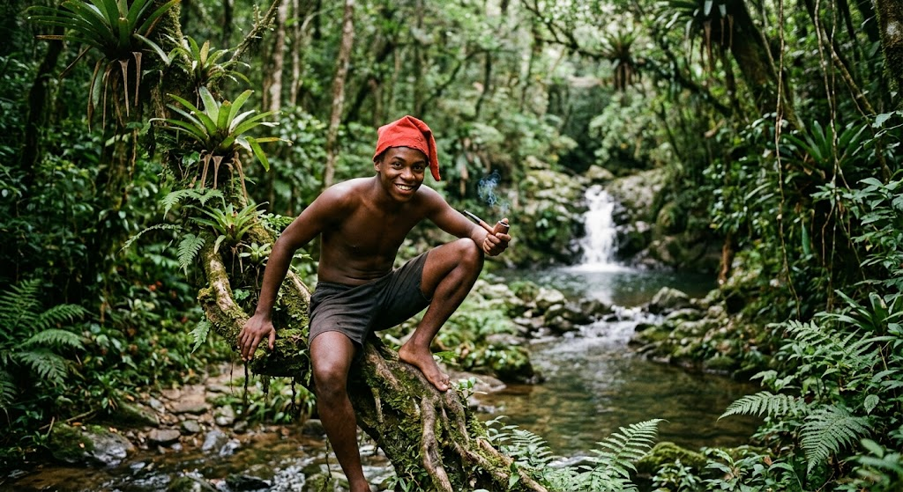
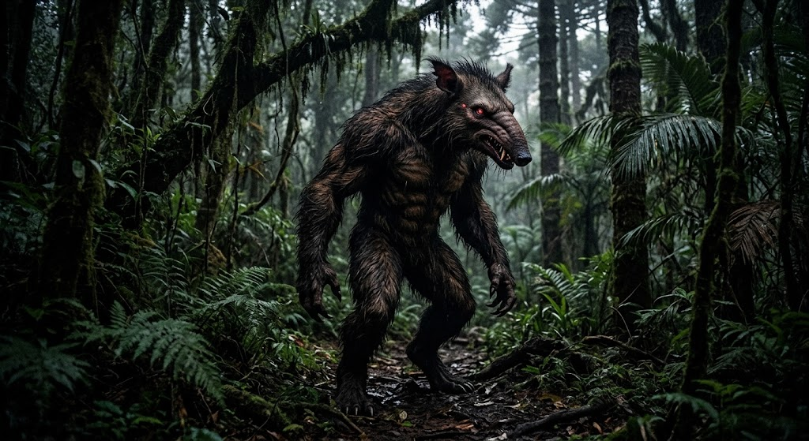

Esta lenda urbana clássica do folclore escolar ganhou adaptações marcantes no Paraná, transitando entre os corredores das escolas tradicionais de Curitiba e os pontos de encontro centrais da cidade. A narrativa conta a história do espírito de uma jovem que surge nos banheiros após rituais de invocação, servindo como um conto de mistério popular transmitido entre gerações de estudantes paranaenses.
Na região do Vale do Ribeira e no litoral paranaense, as histórias sobre o Saci recebem nuances ligadas à preservação da Mata Atlântica e às comunidades caiçaras e sertanejas. A figura travessa do folclore nacional é retratada como protetora da fauna e flora locais, pregando peças em caçadores e viajantes que não respeitam os segredos das matas da Serra do Mar.

Presente na tradição oral do interior do estado, o Capelobo é descrito como uma criatura mítica com corpo humano e cabeça de tamanduá-bandeira que ronda as áreas rurais e matas fechadas. A lenda alerta sobre os perigos de se aventurar sozinho pelas florestas durante a noite, representando o medo do desconhecido que habita a vegetação nativa do Paraná.
